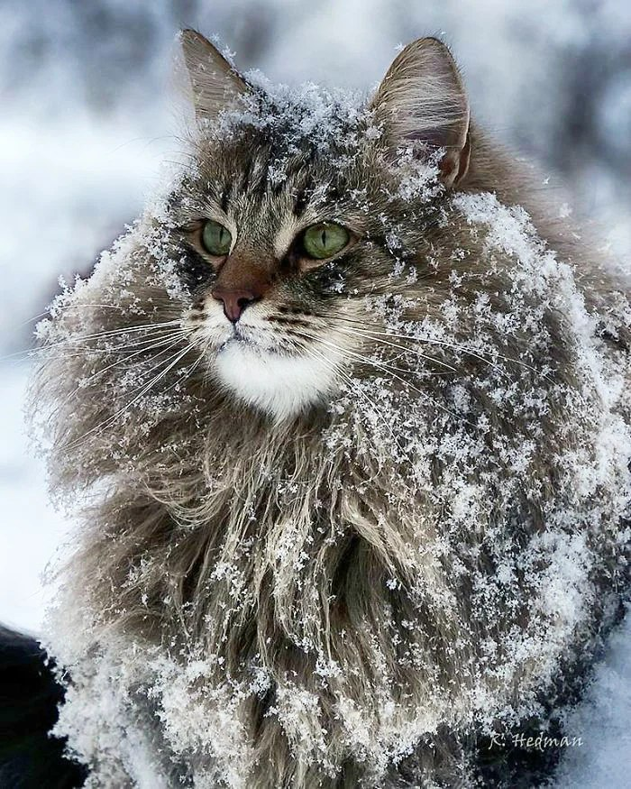
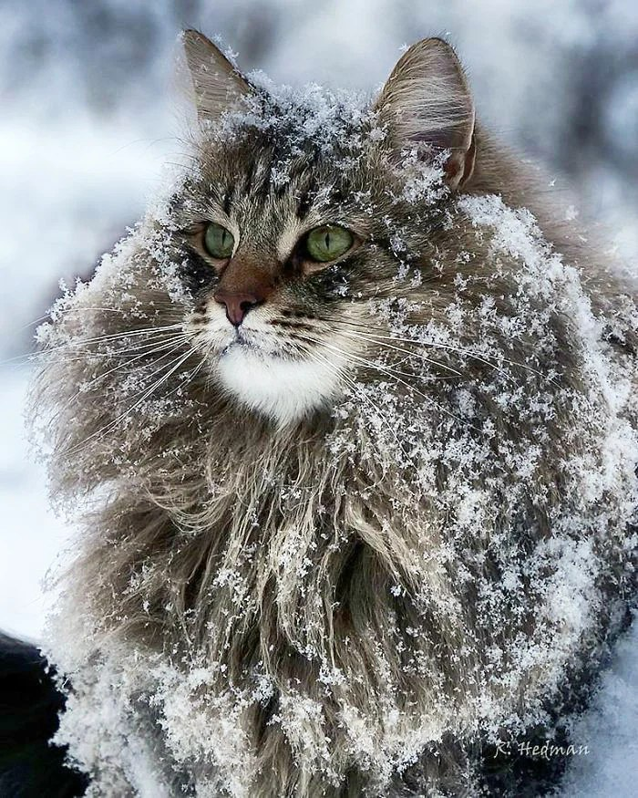

ШЕРСТЬ!
Да! Да! И еще раз да! Шерсти неимоверно много. Будьте готовы к тому, что если вы одели кофту, то на вас будет еще одна Сибирско-Кошачья.))) Т.к. животное очень сильно линяет, очень сложно вычесыват всю шерсть сразу. Но при должном уходе, и регулярном вычесывании (ежедневном), вы сохраните свой дом. вещи в чистоте и так же ваши бутерброды останутся без добавочного ингридиента!) Шутка!!! Всем спасибо за просмотр.